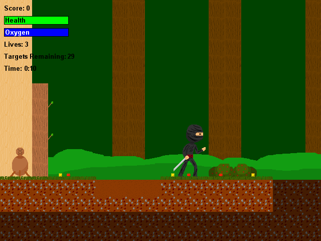

You've struggled your way through many trials and tests during your time learning ninjitsu under your master, and now here you are. The final test of skill lies before you. Blaze through forest, ruins, and temple, finding and dispatching the numerous targets your master has set up for you! Beware of pitfalls and other traps, though. A true ninja must never let his guard down.
A Ninja's Training is the earliest game I have on this site to date, made back in 2013, for a high-school class. The project was created solo. As such, all art assets, music, and programming are my own. The SFX were gathered from free online resources. The instruments in the MIDI soundtrack are the Windows default.
The game was created over the course of about a month using Game Maker 8.1.
